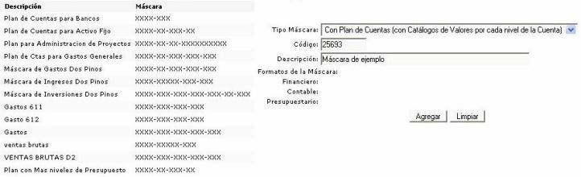
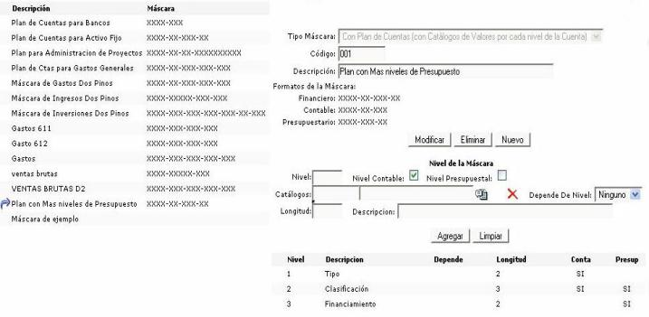

Máscaras del plan de cuentas
Para agregar máscaras para la cuentas ingrese un código y una descripción posteriormente haga clic sobre el botón "Agregar".

Figura 1. Agregar máscaras al plan de cuentas.
Una vez ingresada la máscara puede definir el nivel de la máscara seleccionando un tipo (nivel contable, nivel presupuestal) por medio del check, luego seleccione un catálogo de la lista (si lo conoce digite el código del mismo) así como un nivel de dependencia. Ingrese una longitud de dígitos para la máscara y una descripción para la misma. Finalmente haga clic sobre el botón "Agregar".

Figura 2. Agregar máscara al plan de cuentas.